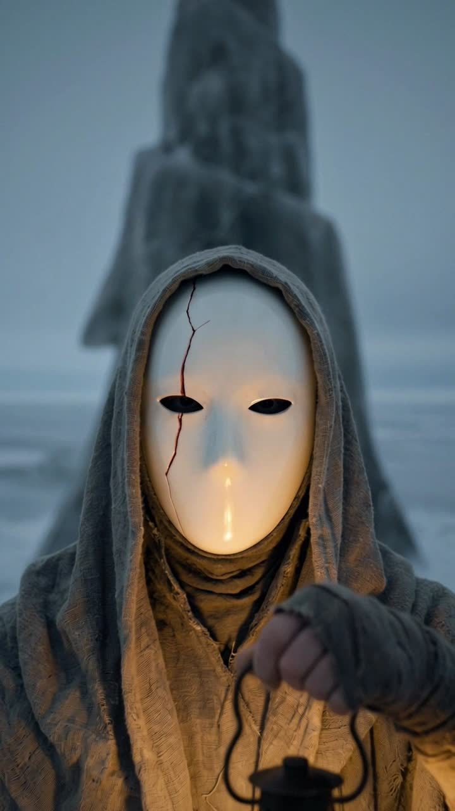
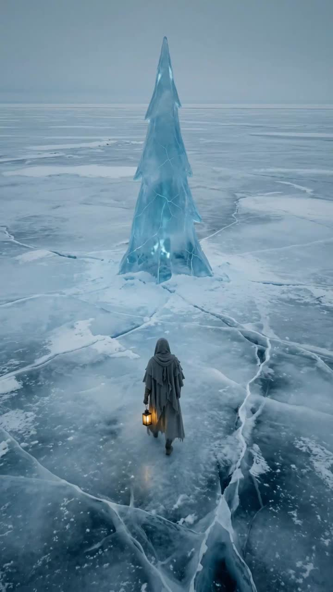
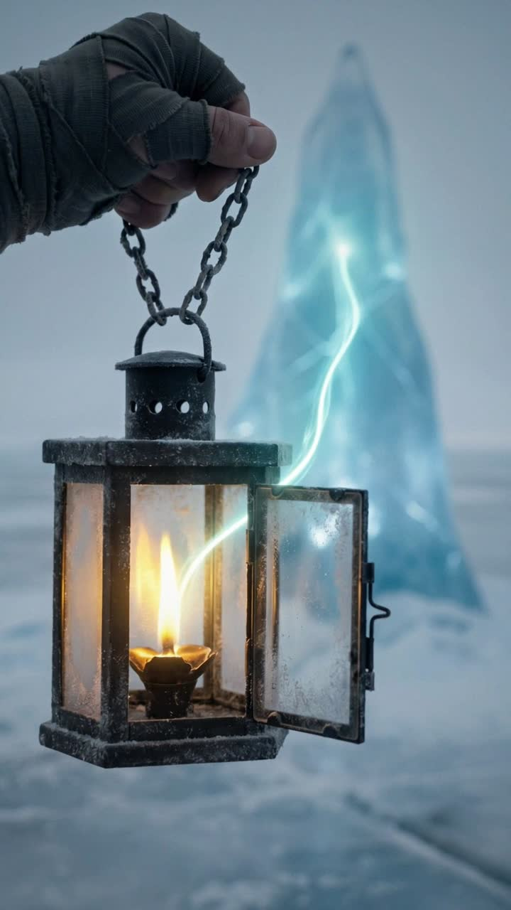
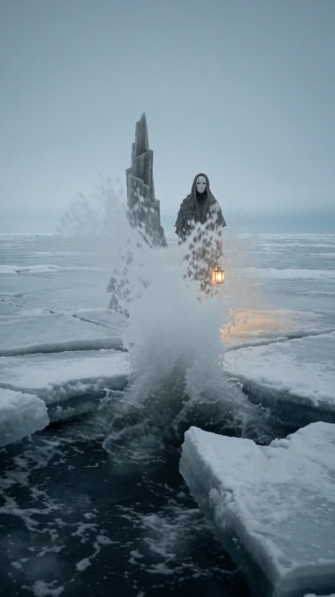
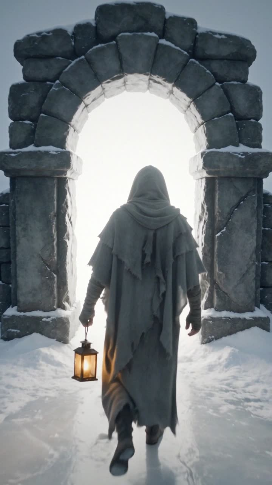
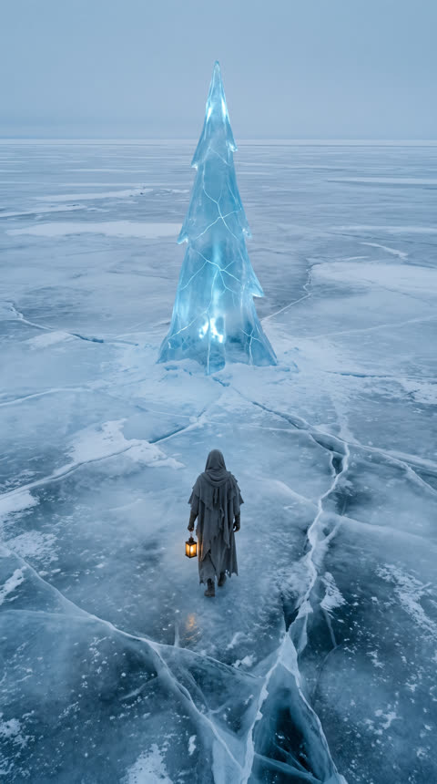
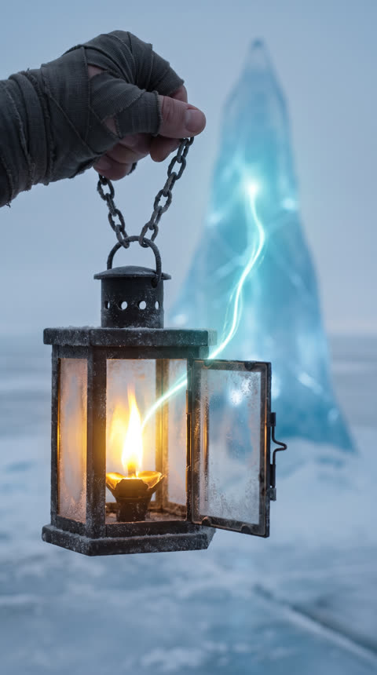
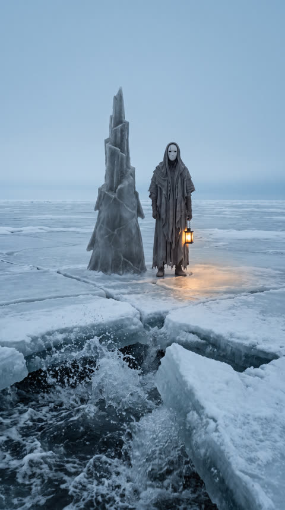
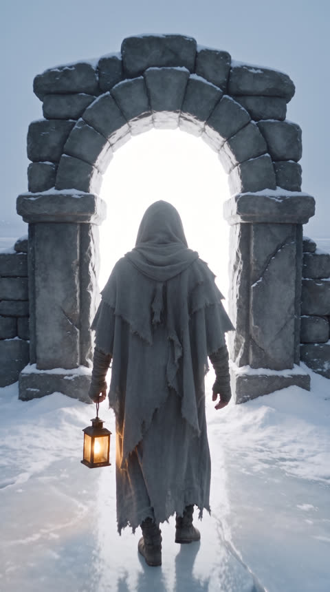

The Pilgrim
World 01
The Frozen Sea.
A masked traveler crosses a frozen ocean to a spire of blue ice, takes its last light into a lantern, and walks out through a world breaking apart in frozen time. Hero, or destroyer? A wordless series: one world, one ember, one door.
- Written & directed
- Rishi Patlolla
- Format
- Vertical short film · 1080×1920 · 24 fps · no dialogue
- Series
- World 01 of 08
- Design & keyframes
- Nano Banana Pro, from a locked character sheet and one world source
- Motion
- Kling 4 and Seedance 2.5 via the Runway API
- Review
- Every keyframe checked side by side against the others; a human approves each one
- Orchestration
- Claude and GitHub Actions
- Edit & finishing
- FFmpeg assembly and end card, DaVinci Resolve finishing
- Sound
- The clips' own effects, mixed by hand for phones
One world, one ember, one door





Every keyframe from the same place
Each of the film's eleven keyframes was made from frames of one approved take of this world, so the sky, the light and the spire stay the same from the first shot to the door. They were judged side by side, never one at a time.
Approved keyframes




What the machine gave us,
and what we kept.
- Threw away the first cutFive shots from five separately generated keyframes played like five different worlds. Nothing in it was kept.
- Built every shot from one worldThe keyframes were remade from frames of a single approved take, with one repeated light line, so the whole film shares one sky.
- Never the same angle twice in a rowTwo shots from behind, back to back, read as a jump. A side, overhead or detail shot now sits between them.
- Cut an insert that broke the mapA side-on walking shot put the spire in the wrong place. It was replaced, because an insert has to agree with the shots around it.
- Kept the clips' own soundA steadier synthesized wind bed was tried and compared. The final keeps the generated ice, light and door effects, which had more weight.
- Finished for phonesA white-to-black dissolve from the door into a serif title card, and the export raised from −23 to −14 LUFS with a limiter.
How World 01 was made
Series & world
A wordless series in eight worlds, a locked design for the Pilgrim, its mask and its lantern, and five beats for this world: arrival, ember, break, walk, door.
Rishi · ClaudeKeyframes
Eleven keyframes from one world source, reviewed side by side for light, scale and geography, approved one by one.
Nano Banana ProMotion
Short Kling 4 shots for the calm moments, Seedance 2.5 for the break and the walk through frozen time.
Runway API · GitHub ActionsEdit & finish
Cut on the move, the end card designed, sound compared and mixed, loudness checked on the uploaded file.
FFmpeg · DaVinci Resolve